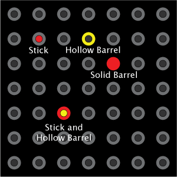
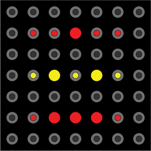
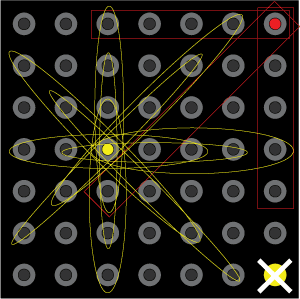
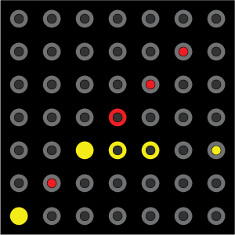
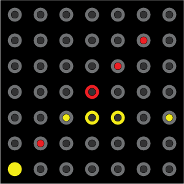
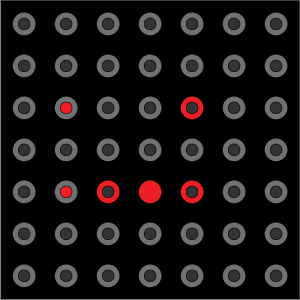
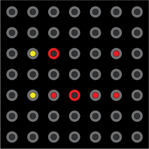
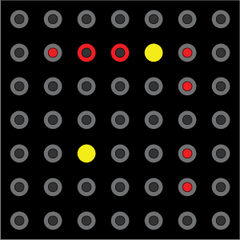
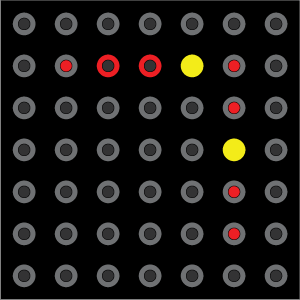

Introduction
This document describes the algorithm to be used by the computer/auto
player for the "Sticks 'n' Barrels" game. It includes algorithm
proposals and documents the considerations that went into the choice of
those algorithms.
Purpose
The purpose of documenting the algorithm in this fashion is to ensure
the algorithm is well planned and well reasoned before going to code,
including allowing for critique of the algorithm without the
distraction of coding syntax, etc.
Algorithm Goals
For the purposes of this document, we are trying to design a computer
algorithm for playing "Sticks 'n' Barrels" which does the best possible
job. Therefore, when there is a clearly preferable move (e.g., it
is possible for the computer to win in one move), our algorithm should
take it. This algorithm does not have among its goals a desire to
emulate human mistakes (e.g. missing a possible win because the player
is unable to spot the move in the complexity of the board).
Finally, the algorithm assumes it is playing against a similarly
infallible opponent; if it can see a desirable move that it is able to
block, it does so without any consideration of the possibility that the
opponent may not have been aware of that move.
Basics of the Game
The game of "Sticks 'n' Barrels" is designed for two players.
Each player moves one piece per turn, and endeavors to form one
of the approved sequences of pieces before the other player is able to
do so. Details are provided below.
Pieces
Each player has her own set of game pieces, including:
- 4 hollow barrels
- 4 solid barrels
- 10 sticks
Board Configuration
The game is to be played on a 7x7 board of peg holes. Each hole
is designed to accommodate the follow combinations of pieces:
- a single solid barrel
- a single hollow barrel
- a single stick
- one hollow barrel and one stick together (one of each color)

Goal Sequences
There are three sequence of pieces that constitute a winning configuration:
- stick, stick, barrel, stick, stick
- stick, barrel, stick, barrel, stick
- stick, barrel, barrel, barrel, stick

(Of course, hollow barrels can also be used anywhere a solid barrel is shown in the sequences.)
Allowed Moves
On each turn, a player must move exactly one piece. The following rules determine which pieces may be moved:
- If the player has any sticks which are not yet in play, he must move one of those sticks before moving one that is in play.
- If the player has any barrels (hollow or solid) which are not in
play, he must move one of those barrels before moving one that is in
play.
- Once all pieces of a particular type are in play (either all
sticks, or all barrels), the player may move any piece of that type on
his turn.
These rules determine where the piece may be placed:
- Any piece may be placed in an unoccupied hole.
- Two pieces belonging to the same player may never occupy the same hole.
- If a hole contains a stick belonging to her opponent, a player may place a hollow barrel in that hole as well.
- If a hole contains a hollow barrel belonging to her opponent, a player may place a stick in that hole as well.
Strategic Considerations for the Auto Player
Included in this section are possible considerations the automatic
player could make when deciding its next move. These
considerations may not all be directly addressed by the proposed
algorithm.
Always Take an Immediate Win
Our auto player should always win when it is possible for it to do so
in one move. This is the unambiguous best move when the situation
presents itself, and it's easy for the computer to review all possible
moves and determine if one (or more) cause a win.
Block Immediate Wins
When it is not possible to end the game by winning itself, our auto
player should check for places where the opponent can win on her next
move and block that opportunity if possible. This move is more
subtle to select than a win of one's own; there may be a need to
consider:
- multiple locations where a one move win is possible
- which piece to use:
- solid barrels block definitively, but are a scarce resource
- sticks and hollow barrels may block one move but set up an
unblockable alternate move for the opponent, either on the next move or
a later one
Block or Avoid Creating Unblockable Opponent Wins
Because a stick and a hollow barrel from opposing sides can occupy the
same hole simultaneously, but a stick and hollow barrel both owned by
the same player may not, there are situations where a player can
combine his own pieces with those placed by an opponent to create an
unblockable future win. For example, suppose the following
sequence is present on the board:
Suppose the red player places a red stick in the empty spot:
The red player is now guaranteed to win on his next move (unless yellow
is able to win in a single move elsewhere), because yellow cannot block
red placing a stick in the same spot with her hollow barrel.
Since two yellow pieces cannot occupy the same location at once,
any blocking move would require two turns: one to move the hollow
barrel out of the way, and the other to place a stick or solid barrel
in its place. Red would win before the second turn, rendering
that strategy useless.
There are several subtleties that are glossed over by the above
example. Each player always has a stick available to move: either
there are sticks left in the player's tray of unplayed pieces, or all
are in play and therefore can be moved at will. However, a player
may not always have the option to move a hollow barrel: if there are
solid barrels left in the player's tray of unplayed pieces, but all
hollow barrels are in play, he must play those solid barrels before
moving a hollow one. (Of course, the same is true if a player
desires to use a solid barrel but there are still hollow barrels in the
tray of unplayed pieces.)
In terms of our algorithm, we would like to build in an awareness of these unblockable moves, in several ways:
- use opponents' played pieces to form unblockable winning sequences
- discourage the placement of pieces to create favorable unblockable plays for the opponent
Build Towards Flexible Wins
When selecting a move to make, the computer should endeavor to place pieces to maximize their future usefulness.
One consideration is placing pieces so they are usable to form
sequences in more than one direction. In the image below, the
yellow stick can be used in sequences in the 10 circled locations,
while the red stick can only be used in the three boxed locations.
The yellow barrel cannot be used to form a winning sequence at
all (because no sequence begins or ends with a barrel).

Another possibility is placing pieces so
that more than one of the winning sequences can be formed in a given
location. In the image below, the top row allows for any of the
three sequences to be filled in later, while the middle row can only be
filled in to complete stick, stick, barrel, stick stick. The
bottom row could be completed with either two sticks or two barrels.
One note related to these considerations is that holes in various parts
of the board have differing numbers of 5-hole sequences to which they
belong. The center hole belongs to 12 sequences (3 each of rows,
columns, right diagonals and left diagonals), while the holes at the
corners each belong to only three (1 row, column, and diagonal).
The closer to the center of the board a piece is placed, the more
opportunities it has to influence or create winning sequences.
The ability to affect more sequences can be both beneficial and
detrimental. For example, sticks are used more often in
sequences and in more positions within those sequences, so placing a
stick near the middle of the board has a high likelihood of allowing
the building of sequences in many directions. On the other hand,
though placing a solid barrel near the middle of the board may block an
opponent decisively, it might also interfere with a larger number of
that player's own sequences that are partially built. Trade offs
like these may be factored in to choosing the exact piece and location
of play.
Avoid Self-Blocks When Feasible
The auto players should try to avoid blocking its own partial sequences
from being completed except when it is impossible to avoid doing so
while making high-priority moves (winning, blocking immediate wins,
etc.). An obvious example is not using a solid barrel to block a
move that crosses a sequence where a stick could be used in that
position:
 versus 
Both
images show yellow successfully blocking red's diagonal sequence, but
the choice on the right leaves yellow open to finish her own sequence,
while the one on the left eliminates that option.
Move Low Value Pieces Before High Value Ones
A player must put all of his pieces of a particular type (sticks or
barrels) into play before she can move a piece of that type from one
location in play to another. Once all pieces of that type are in
play, though, it is important to select the piece to move strategically
when it is required in another location. Pieces involved in the
most incomplete sequences and/or the smallest number of different
sequences, should be moved before pieces that are involved in forming
more complete sequences. As a simplified example, in the
following image the stick in the top row should be moved before the
stick in the bottom row:

In addition, pieces that are blocking high value moves by the other
player (wins or near wins) should be left in place in favor of moving
pieces that are not involved in blocking or are blocking less complete
sequences. In this second simplified example, the yellow stick in
the top row should again be moved before the one in the bottom row:

Consider the Opponent's Resources
While playing the game, it is easy to determine which pieces the
opponent has left in her unplayed pieces tray. As discussed
above, both types of barrels are prohibited from moving from one place
in play to another until all of both types of barrels have been played.
This could effect the opponents' strategy in a small number of
cases. For example, if the board contains the following sequence:
And the yellow player has played all her solid barrels but still has
some hollow barrels left unplayed, then it is impossible for yellow to
block red's win. Either of the pieces she could put in play fails to block all possible winning sequences:
or
These situation are rare enough that they may not be worth explicitly factoring into the algorithm, but they do exist.
The Existing Algorithm
There is an existing version of the "Sticks 'n' Barrels" auto player,
dating from late 2006. It plays well enough to be amusing and not
an embarrassment to itself, but has some noteworthy flaws and
limitations. The approach to game play used by the existing
algorithm is summarized in this section, along with some analysis of
its shortcomings.
Overview
For each turn, the current algorithm attempts to complete the following steps:
- Calculate a numeric value representing how "good" a move it would
be to place a stick, solid barrel, or hollow barrel at each position on
the board.
- Find the "best" move by traversing the list and comparing the best move so far with each subsequent move.
- Perform the "best" move using the next available piece of the
correct type for the move (with an effort made to pick the least
valuable piece when a piece currently in play will be moved).
Assigning Value to a Move
To generate the possible moves and their assigned values, the entire
board is traversed. For each position on the board, a calculation
is made to assign a value to placing that type of piece in that
particular spot given the current state of the game. It is
sometimes possible for one type of barrels (hollow or solid) to be
unavailable to the player (because some of the other type are not yet
in play); in those cases, no moves using the unavailable type are
included in the selection process. Similarly, if it is not
possible for the player to place a particular type of piece in a given
location, no move representing that placement is included.
For those situations where a move is possible (the piece to make the
move is available and the piece can be played in the desired position),
an instance of a PositionRank class is created to represent the
possible move and its value. All the possible PositionRank
instances are added to a list for further consideration.
The PositionRank class provides a method called compare that accepts a
second PositionRank and returns its assessment of which is the better
move. This function is the heart of the algorithm and initiates
all the computation that goes into selecting the preferred move.
Always Prefer a Win
The compare function first decides if either of the moves will win the
game. If either ones does, it is identified as the better move;
if both do, they're identified as equal.
Always Try to Block Opponents' One-Move Wins
The next check is for whether a move will block an opponent from an
immediate win of her own on the next turn. If this isn't blocked,
the opponent will win on the next turn, so if the player can't win
himself, he must block it.
Building to 4 in a sequence or blocking opponent's building to 4
If you can't win or block a win, these are the next best things.
Try to build your own sequence with 4 out of 5 positions filled,
or failing that, block the opponent's chance to build to 4 out of 5.
Score the remaining options
This is (probably) one of the weakest points of the current algorithm,
especially if we confine ourselves to considering only the cases the
algorithm already attempts to address. A score is built for the
move by assigning numeric values to conditions in the following way:
- building to 4 in a sequence: 8 points
- building to 3 in a sequence: 6 points
- building to 2 in a sequence: 4 points
- building to 1 in a sequence: 2 points
- blocking a build to 4 in a sequence: 7 points
- blocking a build to 3 in a sequence: 3 points
- blocking a build to 2 in a sequence: 1 point
There are several things that make this method less than ideal.
First, though likely most minor, it contains redundancy with the
previous two cases (build to 4 and block to 4); the 8 point and 7 point
cases will never occur because it those cases we've already decided
between the two moves and returned from the function before these
calculations could take place. Second, however, is the fact that
the number of points assigned to each case was determined completely
unscientifically and is therefore is unlikely to really value things
properly to make good decisions. Is a place where you build to 3
in one way and 1 in another really equally good as building to 4?
A possible step in improving this algorithm would be to refine
these numbers.
How Building and Blocking are Determined
The section above glosses over how the algorithm decides if a move
builds or blocks a certain quality of sequence. Here's an
explanation of the considerations there.
Determining if a Move Builds To N in a Sequence
Each hole is a member of a certain number of possible locations for
sequences (see above). The sequences that pass through the hole
we're planning to move in are each examined in turn. A version of
the state of that sequence location is created including all the
current pieces and the piece we intend to place (i.e., the results of
making our prospective move).
Once this is created, we test that the sequence is not blocked.
Then we test if the number of pieces correctly placed after the
new piece is added is greater than the number in place before (this
could be the case, for example, if we had "stick, stick, barrel, empty,
empty" and we were considering "stick, stick, barrel, stick, empty",
but not if we were considering "stick, stick, barrel, barrel, empty").
Finally, the number of pieces that would be in place after the
move is compared to the goal number. If all these are true for
any sequence, we return true. If they're never all true for any
possible resulting sequence, we return false.
One limitation here is that data is lost in terms of the *number* of
sequences that build to a particular number in that location. If
the first sequence tested for building to 3 does so, we never find out
if it's the only one, or if there are 5 such sequences built in this
place. The flexibility considerations (see above) aren't fully
accounted for here.
Determining of a Move Blocks an Opponent's Build to N in a Sequence
Figuring out how long a sequence is being blocked is similar to
figuring out how long a sequence is built. The old sequence is
check to see that it is not already blocked; if so, there's no value is
blocking again. Then possible new sequence is checked to see if
it will block a sequence in that location for the opponent. Then
the number of pieces the opponent has in place in a sequence in that
location is compared to the goal number. If all these are true
for any sequence, we return true. If they're not all true for
any, we return false. It has similar weaknesses to the above
building check.
Picking a Piece to Move
Once the preferred move is decided, the algorithm decides which piece to use to complete the move.
Move the Pieces from the Tray First
The rules of the game dictate that all the pieces of a particular type
(sticks or barrels) must be in play before any piece of that type that
is in play is moved to a new location. So, if a stick is
required, and there are unplayed sticks, one of those sticks is played.
Similarly, while either type of barrel is left unplayed, barrel
requirements can only be fulfilled by unplayed pieces. As
mentioned above, this occasionally means that it is not possible to
make a move with one type of barrel or the other; the algorithm
accounts for this by making sure the needed piece is available before
proposing a move.
Then Move the Least Valuable Piece in Play
If there are no pieces of the desired type left unplayed, then any
piece of that type can be moved from one location in play to another.
To pick which piece to move, the algorithm uses a process that
roughly mirrors the process of picking the desired move; it tries
removing the piece from each location is it currently played at, and
sees which removal causes the smallest or least damaging disruption to
the player's strategy. Because this method is one of the greatest
weaknesses of the current algorithm and won't be reused at all by the
new version, no detailed analysis is necessary.
What's Missing
The biggest single thing that is completely missing so far from our
algorithm is factoring in unblockable moves (see above). Our
algorithm doesn't consider exploiting them, and it doesn't consider
them when deciding when or how to block an opponent. Anecdotal
experience from playing the game with two humans suggests this can be
key to winning strategies with experienced players: building a sequence
from scratch, with no assistance from strategic use of opponent pieces,
is often too easily spotted and blocked.
Also, as is mentioned above, there is little consideration of how many
ways a particular move will meet a particular goal. The scoring
method attempts to factor in how many different condition are
satisfied, but doesn't factor in how many times a particular
condition is met by the move (e.g., building to 4 in three directions
is better than building to 4 in one).
Another missing factor is any notion of preventing prematurely blocking
one of the possible sequences you could build while trying to build
another. Each sequence type (of the three possible wining
sequences) is considered independently, so the fact that one can be
built with a particular move overrides any information about whether
that move blocks another sequence, even when an alternate move would
allow both possible sequences to continue to be considered.
Finally, the current algorithm does an abysmal job of selecting which
piece to move once all pieces are in play and it must move played
pieces around the board. It routinely sabotages itself while
making these selections. While having no knowledge of
"unblockable" moves creates a significant weakness in the algorithm,
the current method for selecting the piece to move is the algorithmic
equivalent of shooting itself in the foot.
An Alternate Strategy
Given the analysis of the game above, and the lessons learned from the
weaknesses of the existing algorithm, we can being to formulate a new
approach.
Evaluate Possible Boards Instead of Possible Moves
As mentioned, the selection of the preferred piece to move presented
significant difficulties in the previous algorithm. Part of the
problem was likely that the effect of the piece in the new location and
the effect of removing a piece were considered independently, when in
fact the removal of the piece from one location is likely to affect the
state of the game for the new location. Considering the whole
board after each possible move, and deciding which of the possible
outcome boards would be best, would do much to improve on the old
algorithm in this regard.
Assigning Relative Values to Possible Boards
This new strategy requires the algorithm to be able to compare the
state of the game on two different boards and decide which one is
preferable.
A Winning Board is Best
As always, aim to win. A board with a winning sequence for the current player is as good (or better than) any other.
Make Sure The Opponent Can't Win (If Possible)
When a board has no wins for the current player, the next best thing is
to be sure that all the places where the opponent could win in one move
are blocked. Take the following boards (simplified to show only
the pieces relevant to this part of the discussion):
 or 
From the perspective of the yellow player, the board on the right is
preferable to the one on the left because it offers fewer opportunities
for the red player to win in one move (zero versus one). The
algorithm should select the board with the fewest opportunities
(ideally zero) for the opponent to one in one move.
Factors Considered in Valuing Boards with No Near Wins
If no board is a winning board for the current player, and all boards
have zero opportunities for the opponent to win in one move, evaluating
their relative merit becomes more difficult. Two components will
figure into the algorithm's strategy at this stage: favoring sequences
with unblockable moves (and avoiding creating such moves for the
opponent), and maximizing "good" board features while minimizing "bad"
ones.
Favoring Unblockable Moves
The previous algorithm, as mentioned above, does not have a mechanism
for recognizing unblockable moves. Thus, it is worth discussing
in some detail how to detect them and how to assign value to sequences
containing those moves relative to other sequences.
If the sequence to be built requires a stick in a particular hole, then
there are four possible interesting states for the hole, with varying
levels of desirability. Assuming the algorithm is playing with
red pieces, here are the relevant possibilities: red stick, yellow
hollow barrel, empty, any other piece. A red stick is best
because the needed piece is already in place. Any other piece
(besides a yellow hollow barrel) in that spot blocks the red stick, so
that is the worst case. An empty hole is good, because the
desired piece can still be placed there, but a yellow hollow barrel is
better because *only* a red stick can be placed there, eliminating the
opponent's ability to block the move in the future.
Thus, when valuing a sequence, we should count up how many of the holes
involved are in each of the possible states. For example,
consider the following goal sequence:
Now suppose the actual set of pieces is the following:
Relative to the stated goal sequence,
this actual set of pieces has: 1 piece correctly in place (the red
stick), 1 unblockable move (red barrel placed around the existing
yellow stick), 1 empty hole, and 2 blocked holes (yellow barrel blocks
red barrel and red barrel blocks red stick).
Sequences containing any blocked holes are (for all practical purposes)
equally valueless (frankly, worthless). When comparing sequences
with no blocked holes, the algorithm can compare the number of correct
and unblockable spots to decide the value. Here is one possible
naive ordering of values (from most to least desirable):
- 4 in place and 1 unblockable
- 4 in place
- 3 in place and 2 unblockable
- 3 in place and 1 unblockable
- 3 in place
- 2 in place and 3 unblockable
- 2 in place and 2 unblockable
- 2 in place and 1 unblockable
- 2 in place
- 1 in place and 4 unblockable
- 1 in place and 3 unblockable
- 1 in place and 2 unblockable
- 1 in place and 1 unblockable
- 1 in place
- 5 unblockable
- 4 unblockable
- 3 unblockable
- 2 unblockable
- 1 unblockable
And an alternative ordering (again, most to least desirable) could be:
- 4 in place and 1 unblockable
- 3 in place and 2 unblockable
- 2 in place and 3 unblockable
- 1 in place and 4 unblockable
- 5 unblockable
- 4 in place
- 3 in place and 1 unblockable
- 2 in place and 2 unblockable
- 1 in place and 3 unblockable
- 4 unblockable
- 3 in place
- 2 in place and 1 unblockable
- 1 in place and 2 unblockable
- 3 unblockable
- 2 in place
- 1 in place and 1 unblockable
- 2 unblockable
- 1 in place
- 1 unblockable
Although there may be greater subtleties involved (for example, the
more that are unblockable, rather than in place, the more chances the
opponent has to build a countering win of their own while the algorithm
finishes its sequence), this second ordering seems like a good starting
place. It factors in unblockable moves while still preferring
pieces that are actually already in place.
Detecting unblockable moves is simple. If a stick is desired, the
opponent's hollow barrel is the one and only way an unblockable move is
created. If a barrel is desired, the opponent's stick is the one
and only piece to create an unblockable opportunity for a hollow barrel
to be placed. As a minor note, the fact that unplayed solid
barrels block the ability to move hollow barrels already in play will
delay a players ability to exercise an unblockable move. This
could possibly cause our algorithm to favor an unblockable move
prematurely, giving the opponent time to make a counter move.
However, this situation is expected to be rare enough that it is
not worth factoring in to our algorithm while other ideas for
improvements remain.
Maximizing "Good" Board Features and Minimizing "Bad" Ones
The old algorithm attempted to assign value to moves by considering all
the positive consequences for the player of that particular move.
Those consequences were grouped roughly into two categories:
"builds" (which advanced a player from N pieces in a desired sequence
in place to N+1) and "blocks" (which kept the opponent from being able
to form a sequence in a particular location).
The new algorithm will take a slightly different approach. When
evaluating a board, it will still try to create the maximum number of
"builds" (though it will now, of course, factor in unblockable moves
when doing so). However, instead of trying to maximize "blocks",
it will instead try to minimize the "builds" belonging to the opponent.
This is easier to calculate, particularly in a board-wide context
where there is no knowledge of which piece was just moved. It
also allows easier reuse of code: the same function can calculate the
number of builds for either player and the caller can then treat the
data for itself positively and the data for the opponent negatively.
For a simplified example, consider these two board evaluations
(from the perspective of red):
Board 1:
Red: 3 in place and 1 unblockable
Yellow: 3 in place and 1 unblockable
Board 2:
Red: 2 in place and 1 unblockable
Yellow: 2 in place
Just considering the data for red, Board 1 looks like a better choice.
But, when examining the data for yellow, we see that Board 2 is
likely to be better because Board 1 is equally favorable for the
opponent, while Board 2 places the opponent at a disadvantage.
(Note: The data above does not represent the entire state of the board, but this example serves for simplicity's sake.)
Aggregating Sequence Data to Allow Boards to be Compared
The section above alluded a way to aggregate data about sequence states
in order to compared two boards and decide between them. This
section will consider ideas for how to accomplish that aggregation and
comparison in more depth.
How Many Sequences Must We Consider?
From the old algorithm, we will retain the idea that the state of the
board is considered in terms of the states of each of the possible
winning sequences (the three options mentioned above) in each of the
possible locations on the board a sequence can occur. The board
consists of a total of 60 unique positions where a sequence of 5 pieces
can be made:
- 21 horizontal positions for sequences (3 in each of 7 rows)
- 21 vertical positions (3 in each of 7 columns)
- 9 "left" diagonals
- 9 "right" diagonals (in each direction, 3 diagonals on the center
line, two on each pf the 2 adjacent diagonal lines, and 1 on each of
the 2 lines adjacent to those)
Since there are 3 winning sequences, that means a total of 180 possible
<winning sequence, location> pairs to consider for each player on
each board. Since there are two players (and we must consider the
state of the game for each as discussed above), that's a grand total of
360 <winning sequence, location, player> triples to consider for
each move.
How Many States Can Sequences Be In?
Each of the triples is in one of the following 22 states:
- 5 in place (win)
- 4 in place and 1 unblockable
- 3 in place and 2 unblockable
- 2 in place and 3 unblockable
- 1 in place and 4 unblockable
- 5 unblockable
- 4 in place
- 3 in place and 1 unblockable
- 2 in place and 2 unblockable
- 1 in place and 3 unblockable
- 4 unblockable
- 3 in place
- 2 in place and 1 unblockable
- 1 in place and 2 unblockable
- 3 unblockable
- 2 in place
- 1 in place and 1 unblockable
- 2 unblockable
- 1 in place
- 1 unblockable
- empty
- blocked (by one or more pieces, either own or the opponent's)
For the purposes of our algorithm these are all the distinctions
between states we will consider, though in future it may be worth
considering some of the states currently lumped together as "blocked"
states separately. For one thing, we may feel that being blocked
by the opponent (whose moves we cannot control) is worse than being
blocked by our own piece (since we may eventually move the blocking
piece out of the way). Given that distinction, or perhaps
independently, it might become worth valuing sequences that are blocked
in a smaller number of ways over those more thoroughly blocked; if all
else fails, it is probably preferable to be blocked by one piece of
one's own than three pieces belonging to the opponent. As a
practical matter, however, we expect that such subtleties won't be
necessary to consider in the creation of a good, even formidable,
automated player.
How Can We Aggregate the State Data For the Sequences in Order to Compare Whole Boards?
Our algorithm can easily calculate which of the 22 states above each of
the 360 sequences is in on a given board. But how to aggregate
that data to allow easi(er) comparisons?
For each board, our algorithm can create a table (or the functional
equivalent thereof) where counts of how many sequences are in each of
the 22 states are stored. Actually, two such tables are required:
one with state counts for the player, and one with state counts for the
opponent. Once these counts have been tabulated for a given board
configuration, they will not need to be recomputed when that board is
compared with additional boards. But given the data, how do we
finally decide which of two boards we prefer?
As discussed in a simplified manner above, the algorithm will weight
the number and magnitude of good states for itself against the number
and magnitude of good states for the opponent. Here is a partial
view into one possible way to do the ranking between two boards, A
& B. Unless specified otherwise, each step only factors into
the comparison if the previous step did not yield a definitive winner.
Tie breaking is discussed below.
- Favor either board if it contains a win.
- Favor the board with the smaller number of places where the opponent has an unblockable chance to win:
- 4 in place and 1 unblockable
- 3 in place and 2 unblockable
- 2 in place and 3 unblockable
- 1 in place and 4 unblockable
- 5 unblockable
- Favor the board containing the larger number of places where the player has an unblockable chance to win:
- 4 in place and 1 unblockable
- 3 in place and 2 unblockable
- 2 in place and 3 unblockable
- 1 in place and 4 unblockable
- 5 unblockable
- Repeat steps 2 & 3 for sequences with 4, 3, 2, and 1 pieces in place or unblockable (in that order).
When there is a tie on step 1, it does not matter which board is picked
(can use a coin flip, for example). For the following steps, ties
are broken by comparing the counts on the sub-cases included in that
step in a similar fashion to the overall comparison, so if there is a
tie on step 2, for example, it is broken as follows:
- Favor the board with the smaller number of places where the opponent has 4 in place and 1 unblockable.
- Then with 3 in place and 2 unblockable.
- Then with 2 in place and 3 unblockable.
- Then with 1 in place and 4 unblockable.
- Then with 5 unblockable.
The relative values of the sub-cases are as specified earlier.
Computing the Possible Boards To Consider
It is worth noting how the possible boards will be calculated at each
turn, especially since the existing algorithm handled this aspect of
the computation quite differently. Instead of the old approach of
trying "a stick", "a solid barrel", or "a hollow barrel" at each
location, the new algorithm will treat each piece in turn independently
and without explicit regard for what type of piece it is (beyond the
basics of being sure not to try a piece in a location where it cannot
fit, etc.). So, for each of the 18 pieces a player has it her
disposal, the algorithm will compute the resulting boards if that piece
was moved from its current location to each of the possible new
locations it could occupy.
Since the board has 49 holes, and at most 18 pieces are available to
move each turn, there is an upper bound of 882 possible new boards to
consider each turn. In reality, the number of boards seriously
considered will be lower for several reasons:
- unplayed pieces:
- while sticks are still unplayed:
- only one the unplayed sticks may be put in play each turn
- sticks current in play cannot be moved to new locations
- while barrels are left unplayed:
- only one of the unplayed barrels may be put in play each turn
- barrels currently in play cannot be moved to new locations
- blocking pieces:
- solid barrels belonging to either player block any other piece from occupying the same hole
- hollow barrels block other barrels
- sticks block other sticks and solid barrels
- any hole already containing one piece belonging to a player cannot allow another from the same player
For practical purposes, the algorithm can handle all those special cases fairly seamlessly.
To facilitate the selection of the next move, we must generate copies
of the current board and augment them to reflect each move.